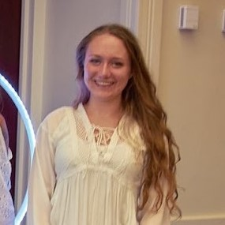
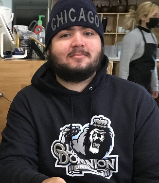

Bryan Burton

Bryan is working on a bachelor's degree in Computer Science and will be graduating in Fall 2022. He's an Eagle Scout, Google IT Support certified, and has experience with databases and programming in C, Ruby, Crystal, and Solidity. In his free time, he likes to drink tea, learn languages, and study insects and zoology.
Tom Cooch

Tom is pursuing a bachelor's degree in Computer Science and will be graduating in Fall 2022. He currently lives in Woodbridge, Virginia and works as a Financial Systems Analyst for the Department of Defense. His interests include paleontology, astronomy, sports and video games.
Trevor Hess

Trevor is working on a bachelor's degree in Computer Science and will be graduating in the Fall of 2022. He currently lives in Winston Salem, NC, and works as an electrical technician. He spends most of his free time renovating his house with his wife. Please feel free to connect with him on LinkedIn
Heather Mallalieu
Heather is a second-degree Computer Science major planning on graduating in Fall 2022. Her previous degree is a B.S. in Biology from James Madison University. She currently lives in Richmond, Virginia - where she spent the last few years working in the cell culture department of a vaccine lab. Her interests include traveling, art and reading.
Lukas McKennedy
Lukas is pursuing his B.S. in Computer Science/minor in Cyber Security and is planning on graduating in Fall 2022. He previously served in the Marine Corps as an Infantry Assaultman, and then spent three years working as a Systems Administrator. He currently works as a DevOps Engineer for a Government contractor, on their CSIRT's Software Design and Engineering team. He lives in the Dallas-Fort-Worth area in Texas with his wife, and his main hobby is powerlifting.
Anton Rasmussen

Anton is a second-degree CS Major/CYSE Minor graduting in Fall 2022. He is interested in the health care domain and works as a Data Engineer for Cityblock Health. Prior to ODU Anton worked in Higher Ed., received a BS in Economics from George Mason University, and worked as a Persian Linguist in the U.S. Army. Please feel free to connect with him on LinkedIn.
Andrew Undercoffer

Andrew is a second-degree in CS for Fall 2022. He currently holds a BS in Engineering Science and Mechanics, with minors in Mathmatics and Leadership from Virgina Tech. Andrew is also a graduate of the Virgina Tech Corps of Cadets. He currently works as a manufacturing engineer. Andrew spends his spare time practicing Jiu-Jitsu and writting. Please feel free to connect with him on LinkedIn
Val Vega
Val is working toward his bachelor's degree in computer science at ODU. He is currently in his senior year and expecting to graduate this fall. He is proficient in C#, C++, Java and is currently teaching himself Python and HTML. His hobbies include card games such as YuGiOh and Magic the Gathering, and trying to learn new skills.